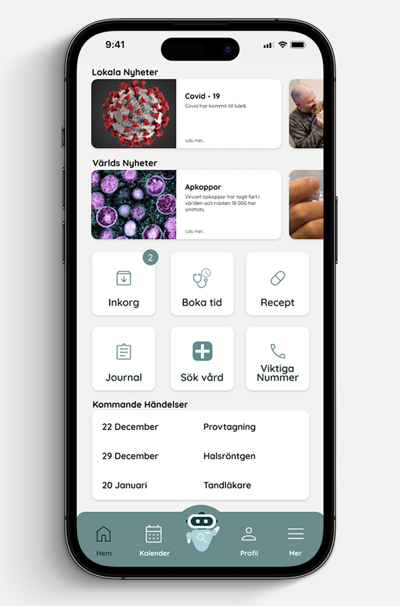
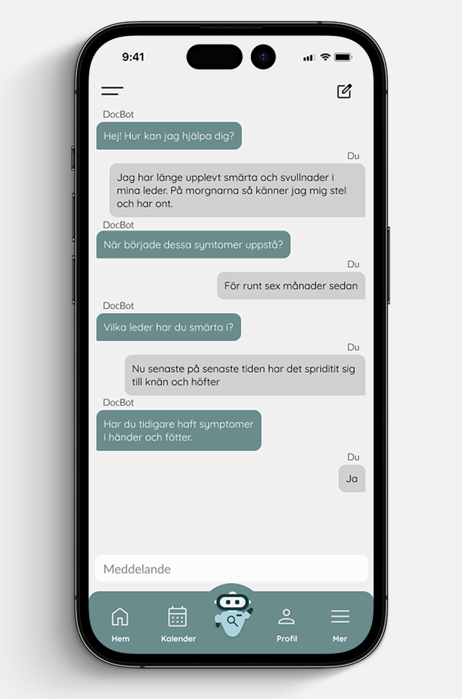
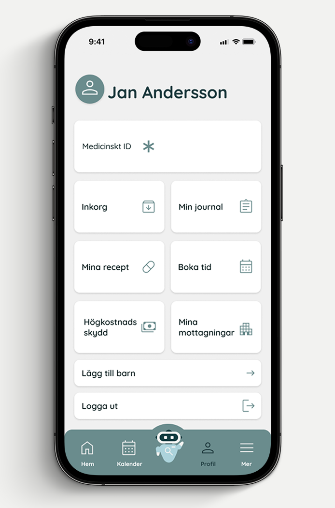
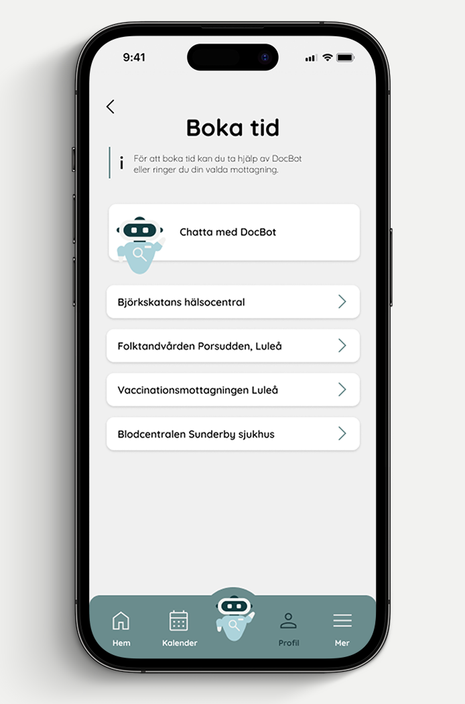
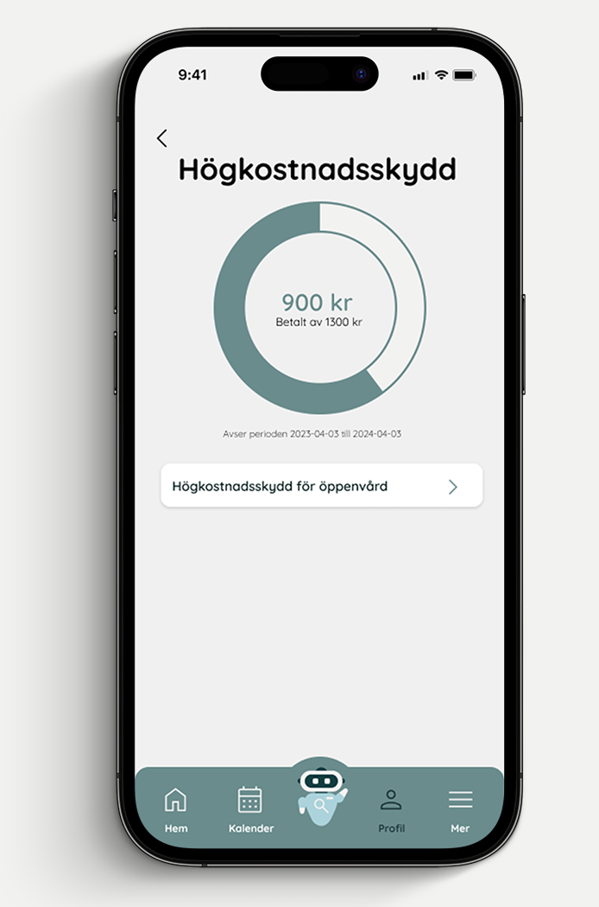

DocBot
A university team project exploring a clearer digital healthcare experience in Sweden. We brought essential services and information together in one app concept, with a conversational assistant to help users find their next step.

- Role
- Team project · 5 people
- Duration
- 8 weeks · 2023
- Tools
- Figma and Photoshop
- Focus
- UI, UX and functional prototyping
The brief
For this university project, our team was asked to create a functional app prototype. We chose to explore how appointments, prescriptions, medical records, messages and health information could be brought together in one place.
The concept focused on clarity and familiar navigation, reducing the effort of moving between separate services. A healthcare overview gives users a starting point, while the DocBot assistant offers a conversational way to find information.
Designing the experience
We used a calm colour palette, clear hierarchy and familiar interface patterns to organize the experience. The home screen provides an overview, the assistant supports questions, and the profile brings personal information and services together.
Appointment booking and care-cost information sit alongside these core screens, using the same navigation and visual language to keep the experience consistent.





The result
The functional app prototype brings the experience into one path: get an overview, ask a question, understand the information and find the next step. The screens communicate how a single interface could connect a fragmented set of services.
The project gave us a way to explore the relationship between information structure, interaction and visual design as one experience.
See the prototype walkthroughWhat I learned
I learned how much the structure of information affects an interface. Bringing several services into one app meant deciding what users should see first, how they could move between tasks and where conversational guidance could help. Working as a team also meant keeping the screens and navigation consistent.
- Skills I developed
- Organizing complex information into a clear interface.
- Connecting screen hierarchy, navigation and interaction.
- Developing a consistent app prototype with a team.
- Tools & methods
- Figma for interface design and functional prototyping.
- Photoshop for visual presentation.
- Screen flows, information hierarchy and familiar interface patterns.
Explore the prototype.
A walkthrough of DocBot’s screens and interactions.